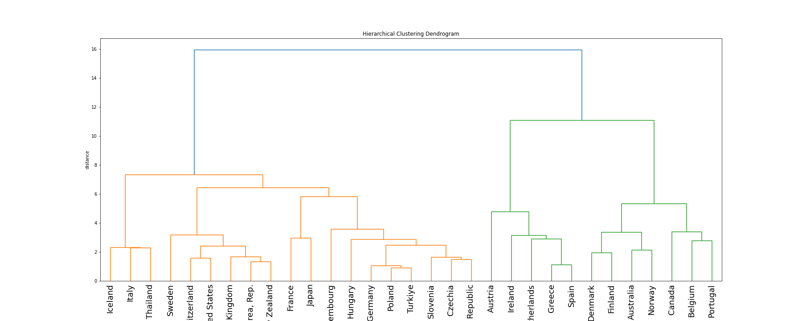

The first chart tracks the rate of interest the UK government pays on newly issued 1-year and 10-year gilts (government bonds).
My second chart depicts the base rate of interest set by the Bank of England from 1975 to present
The FT article's narrative is that IMF lending is at an all time high and thus at its riskiest. Whilst true in nominal values, when representing IMF SDRs relative to global GDP, it is evident that lending in 1984 was riskier than currently.
Transforming this data to be visualised in a bar chart facilitates comparison across country, and it is easier to conceive of the magnitude of differences.
Below is an international comparison of Happiness Index scores. I chose this dataset as it would be interesting to build upon this with context; e.g: happiness in relation to gdp/health/education.
Python Code
Iteration to batch download, creating nine graphs: collab link: https://github.com/PremWoods/PremWoods.github.io/blob/main/Week4.ipynb
This Chloropleth plots the quantity of Official Development Assistance (ODA) by African Country
During the Festival of Economics seminar titles: "Reflections on Economics", an audience member sparked a discussion regarding the growing generational inequality of homeownership, suggesting it will continue to grow as house price growth outstrips wage growth.
The First Graph confirms the notion of a generational divide: homeownership amongst over 65s is growing, whislt for Under 65s, there is a clear downward trend.
The Second chart confirms the vastly different rates of growth for house prices and wages.
I used a linear regression to determine the relationship between ODA flows and Extreme Poverty. Hypothesis: ODA is ineffectively allocated to solve poverty.
Result: Those with the highest proportion of popultation in Extreme poverty do not receive the most. An R-squared of 4% confirms the Hypothesis.
Python CodeHypothesis: All donor countries adjust their AID flow in a similar way (in response to shocks etc.). Groupings will therefore be difficult.
Result: There does seem to be a lot of clustering, however, I anticipated a European bloc which did not emerge.
Python Code 